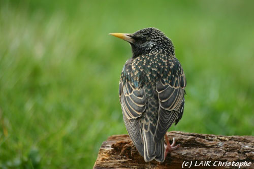

L'étourneau
L'étourneau est un oiseau de taille moyenne, il a un bec jaune pointu et un plumage tacheté. Les plumes noirâtres ont des reflets métalliques, bleus, verts et violets. Après la mue estivale, la livrée est tachetée car l'extrémité des
plumes s'éclaircit. Ces marques sont plus nombreuses chez les jeunes. Au printemps, le plumage est plus foncé, car les marques claires ont disparu par usure et le mâle a l'air plus coloré que la femelle, avec un fond bleu vers
la cuisse. En automne, son plumage se couvre de nombreuses pointes blanches très caractéristiques. Son plumage nuptial, dépourvu de pointes blanches, se teinte de reflets vert et violacé. Reconnaissable en vol à ses ailes triangulaires
et pointues.
Comportement
Oiseau sociable et bruyant, l'étourneau est un visiteur fréquent des jardins, se nourrissant dans les pelouses et dans les arbres, où il capture des insectes. Il se nourrit généralement en groupe, dans un fracas impressionnant. En hiver,
des bandes immenses traversent le continent.
Les mâles sont parfois polygames et on a constaté qu'ils s'accouplaient parfois avec 5 femelles différentes.
Les étourneaux se nourrissent en marchant et en piquant continuellement le sol de leur bec.
Les étourneaux vivent en bandes une grande partie de l'année. En groupes, ils envahissent bruyamment les mangeoires. Après la reproduction, ils forment de vastes dortoirs ; le soir, on entend leurs cris quand ils se rendent aux points de rassemblement.
Habitat
Très fréquent dans les jardins des zones rurales ou urbaines et dans les régions cultivées plantées d'arbres, dans les bois clairsemés de feuillus ou mixte. Ces dernières années la population des étourneaux a commencé à diminuer dans certaines
régions d'Europe.